치공구설계산업기사 (2004-08-08 기출문제)
1과목: 정밀가공학
1. 수치제어 공작기계에서의 공구대 운동방식으로 유압 서보기구 및 전기 서보기구의 공통적인 제어방식 명칭은?
- 온 오프(on-off)제어 방식
- 계측제어 운동방식
- 비례제어 방식
- 적용제어 방식
(정답률: 알수없음)

2. 직물, 피혁, 고무 등으로 만든 유연한 원판을 고속 회전시키며 원판둘레에 도포한 연삭입자로서 일감의 표면을 매끈하고 광택있게 가공하기 위한 방법?
- 버핑
- 쇼트 피이닝
- 텀블링
- 그릿 블라스트
(정답률: 알수없음)
3. 브라운 샤프형 밀링머신에서 지름피치가 12, 잇수는 76인 스퍼기어를 가공할 때, 사용하는 분할판의 구멍수로 다음 중 가장 적합한 것은?
- 17
- 18
- 19
- 20
(정답률: 알수없음)
4. 센터리스 연삭작업에서 연삭숫돌 지름이 500 mm, 조정숫돌(regulating wheel)의 지름이 300 mm 일 때, 숫돌 축이 5°의 경사를 이루고 있다. 연삭숫돌의 회전수가 250 rpm이고 조정숫돌의 회전수는 200 rpm인 경우 이송속도는?
- 16.42 m/min
- 12.63 m/min
- 15.24 m/min
- 18.15 m/min
(정답률: 알수없음)
5. 나사, 치차 등의 윤곽 연삭시 정확한 단면으로 다듬연삭을 하기 위해 숫돌을 나사, 치차의 단면 등으로 만드는 작업을 무엇이라 하는가?
- 로우딩(loading)
- 트루잉(truing)
- 드레싱(dressing)
- 글레이징(glazing)
(정답률: 알수없음)
6. 다음 브로치에 대한 설명 중 틀린 것은?
- 절삭방향에 따라 압입식과 인발식이 있다.
- 운동방향에 따라 수직식과 수평식이 있다.
- 브로치 머신의 크기는 브로치의 최대 행정(mm)과 작용할 수 있는 최대하중(Ton)으로 나타낸다.
- 소량생산의 경우에 많이 사용된다.
(정답률: 알수없음)
7. 다음 중 쇼트 피닝의 가공법과 가장 비슷한 가공법은?
- 호닝
- 샌드 블라스트
- 래핑
- 전해 연마
(정답률: 알수없음)
8. 두줄 비틀림 홈 드릴 날끝의 표준 각도는?
- 100°
- 118°
- 130°
- 170°
(정답률: 알수없음)
9. CNC선반에서 다음 도면의 C5 모따기 프로그램으로 맞는 것은?
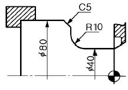
- G01 X80.0 I5.0 F0.1 ;
- G01 X80.0 I-5.0 F0.1 ;
- G01 X80.0 K5.0 F0.1 ;
- G01 X80.0 K-5.0 F0.1 ;
(정답률: 알수없음)
10. 와이어 컷 EDM 가공기에서 방전 갭 50 ㎛, 와이어 지름이 0.3 mm 일 때 보정량으로 가장 적합한 것은?
- 0.1 mm
- 0.2 mm
- 0.3 mm
- 0.4 mm
(정답률: 알수없음)
11. 절삭공구의 경도를 높이기 위한 코팅법으로 마찰이 적고 높은 경도와 공구재료와의 밀착률이 좋아 공구수명을 높일 수 있는 것으로 황금색을 띠는 것은?
- TiC 코팅
- Al2O3 코팅
- TiN 코팅
- 다이아몬드 코팅
(정답률: 알수없음)
12. 연삭가공시 채터현상이 나타났다. 이 현상을 제거하기 위한 방법이 아닌 것은?
- 연삭숫돌의 균형을 맞춘다.
- 숫돌의 결합도가 단단한 숫돌로 교환한다.
- 연삭숫돌과 숫돌축의 관계 불균형을 제거한다.
- 연삭숫돌의 측면을 트루잉하고 눈메움을 제거한다.
(정답률: 알수없음)
13. 이송나사의 피치 5 mm인 밀링머신에서 지름 60 mm의 환봉에 리드가 280 mm인 나선 홈을 절삭할 경우 나선각 θ 는 얼마인가?
- 12° 51′
- 18° 36′
- 33° 57′
- 42° 82′
(정답률: 알수없음)
14. 상온가공이 어려운 내열합금, 담금질강 등 재질의 공작물을 가열하여 연화시킨 상태에서 절삭하는 고온 가공(hot machining)법이 아닌 것은?
- 고주파 가열법
- 방전 가열법
- 시안화(청화)법
- 복사 가공법
(정답률: 알수없음)
15. 선반에서의 테이퍼 절삭방법이 아닌 것은?
- 양 센터를 이용하는 방법
- 심압대의 편위에 의한 방법
- 복식 공구대의 경사에 의한 방법
- 가로이송과 세로이송을 동시에 주는 방법
(정답률: 알수없음)
16. 다음 중 기어의 축 구멍에 키이 홈을 가공하려 할 때, 가장 적합한 공작기계는?
- 선반
- 보링머신
- 슬로터
- 플래이너
(정답률: 알수없음)
17. 칩(chip)의 종류 중 공구의 경사면에 따라 연속된 칩이 발생하며 연성재료를 경사각이 큰 바이트로 절삭깊이를 작게하여 고속절삭할 때 일반적으로 발생하는 형태는?
- 유동형 칩(flow type chip)
- 전단형 칩(shear type chip)
- 열단형 칩(tear type chip)
- 균열형 칩(crack type chip)
(정답률: 알수없음)
18. 구성인선에 관한 설명으로 틀린 것은?
- 공구의 수명은 감소된다.
- 공작물의 치수 정도가 떨어진다.
- 구성인선은 절삭속도가 높을수록 쉽게 발생한다.
- 구성인선은 주기적으로 반복하면서 작업에 영향을 준다.
(정답률: 알수없음)
19. 고속도강 바이트로 지름이 80 mm인 탄소강을 120 m/min의 절삭속도로 절삭하려고 할 때, 주축 회전수는 약 몇 rpm 으로 하여야 하는가?
- 477.46
- 526.25
- 575.01
- 624.78
(정답률: 알수없음)
20. 머시닝 센터의 주요 구성요소인 자동공구 교환장치를 의미하는 용어는?
- CNC
- DNC
- ATC
- MNC
(정답률: 알수없음)
2과목: 치공구설계
21. 다음 드릴부시(Drill bush)의 설계시 치수 결정 방법 중 틀린 것은?
- 드릴의 길이와 종류를 결정한다.
- 부시의 내경과 외경을 결정한다.
- 부시의 길이와 지그본체의 두께를 결정한다.
- 드릴의 직경과 부시의 위치를 결정한다.
(정답률: 알수없음)
22. 그림과 같이 ø50± 0.⑤ 환봉을 90° 간격의 위치 결정구에놓고 20± 0.08 칫수로 빗금 부분을 가공하고자 할 때 공작물 변위(workpiece-variation)로 인한 수평 중심의 변위량은?
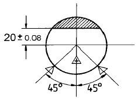
- ± 0.⑤
- ± 0.07
- ± 0.09
- ± 0.14
(정답률: 알수없음)
23. 치공구를 조립할 때 다웰 핀(dowel pin)과 세트 스크류(set screw)를 사용한다. 다음 설명 중 잘못된 것은?
- 세트 스크류에 의해 견고하게 체결되므로 다웰 핀은 사용하지 않아도 된다.
- 세트 스크류의 호칭치수가 다웰 핀보다 약간 더 커야한다.
- 다웰 핀은 억지끼워맞춤으로 한다.
- 다웰 핀은 조립품의 위치결정을 위해 사용한다.
(정답률: 알수없음)
24. 치공구 본체에 대한 설명 중 잘못된 것은?
- 용접형은 열에 의한 변형이 없다.
- 조립형은 현재 가장 많이 사용한다.
- 용접형은 설계 변경시 쉽게 수정 가능하다.
- 조립형은 수리 및 보수가 간단하다.
(정답률: 알수없음)
25. 그림의 공기-유체 부스터(Air-to-Hydraulic Booster)에서 "A"측의 작용압력이 5 kgf/cm2이면 "B"측의 압력은? (단, 마찰면에서 공기 유출등 손실은 없는 것으로 한다.)
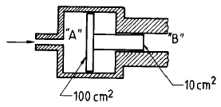
- 5 kgf/cm2
- 0.5 kgf/cm2
- 10 kgf/cm2
- 50 kgf/cm2
(정답률: 알수없음)
26. 링(ring)의 내외경 직경을 동시에 점검하는 데 사용 되는 게이지(gauge)는?
- 플러시핀게이지(flush pin gauge)
- 리시빙게이지(receiving gauge)
- 보충게이지(supplemetal gauge)
- 스냅게이지(snap gauge)
(정답률: 알수없음)
27. 나사산의 높이가 75 %가 생기도록 하는 tap drill size (T.D.S)의 계산식은? (단, D:나사의 외경, h:나사산 높이)
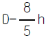
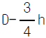
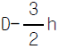
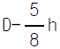
(정답률: 알수없음)
28. 공작물을 고정구에 설치할 경우 풀프루핑(Fool proofing)이 필요한 공작물은?
- 부품의 한 부분이 비대칭
- 부품의 모든 형체가 원통형상
- 부품이 3개 대칭면을 가짐
- 어떤 형상의 부품이라도 풀프루핑(fool proofing)하여야 한다.
(정답률: 알수없음)
29. 펌프의 송출압력이 80 kgf/cm2, 송출량 40 ℓ /min인 유압펌프의 동력은 몇 마력인가?
- 4.22 PS
- 7.11 PS
- 10.11 PS
- 13.22 PS
(정답률: 알수없음)
30. 다음 지지구에 대한 설명 중 맞는 것은?
- 밀링작업에서 하향 작업을 하는 경우에는 필요없다.
- 위치 결정구 보다 높이가 낮아야 한다.
- 고정식(fixed) 지지구가 조정식(adjustable) 지지구보다 효과가 좋다.
- 위치 결정구의 반대편에 설치한다.
(정답률: 알수없음)
31.
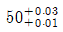
의 구멍과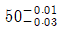
의 축이 끼워 맞춤될 때 최대틈새는?- 0
- 0.02
- 0.04
- 0.06
(정답률: 알수없음)
32. 밀링작업에서 하향절삭시 다음 중 옳은 것은?
- 절삭공구와 공작물의 이송방향이 다르다.
- 가공면이 상향절삭보다 좋다.
- 백래쉬(backlash)가 자연히 제거된다.
- 공작물을 들어 올린다.
(정답률: 알수없음)
33. 90° 의 V블록 위에 지름
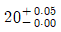
인 원통의 위치 결정(locating)시 중심위치의 최대 변화량은?- 0.025
- 0.035
- 0.02
- 0.⑤
(정답률: 알수없음)
34. 클램프 설계시 고려사항 중 잘못된 것은?
- 절삭력을 가장 잘 견디는 곳에 힘을 가한다.
- 위치결정구의 바로 위 혹은 가까운 곳에 클램핑 시킨다.
- 공작물 재료에 대한 고려를 해야 한다.
- 완성 가공면에는 잠금 면적이 적은 것을 선택한다.
(정답률: 알수없음)
35. 가변 용량형 펌프의 1회전당 송출하는 이론유량이 27[cm3/rev]이다. 이 펌프의 무부하 유량을 50[ℓ /min]이라고 하면 회전수는 몇 rpm 정도 인가?
- 1642 rpm
- 1754 rpm
- 1852 rpm
- 1943 rpm
(정답률: 알수없음)
36. 검사를 위한 게이지설계를 할 때 공작물형상의 기본 7가지 요소가 아닌 것은?
- 거리
- 평면도
- 평행도
- 진위치도
(정답률: 알수없음)
37. 공작물관리(workpiece control)에서 적당치 않은 것은?
- 적당한 locator 배치
- 올바른 holding force의 위치와 방향 선정
- 절삭압력에 의한 제품 변형 고려
- 공작물의 형상을 조정
(정답률: 알수없음)
38. 치공구의 본체를 조립형으로 할 경우에 다웰 핀(dowel pin)을 사용하는 데 다웰 핀의 길이는 어느 정도로 해야 하는가?
- 직경과 같게 한다.
- 직경의 1.5∼2배 정도로 한다.
- 직경의 2∼2.5배 정도로 한다.
- 길이는 길수록 좋다.
(정답률: 알수없음)
39. 다음 제품을 검사하기 위한 기능게이지의 치수 중 구멍에 들어가는 게이지핀의 직경은 얼마인가? (단, 마모여유 및 게이지제작공차는 무시한다.)
- 19.995
- 20.000
- 20.0⑤
- 20.015
(정답률: 알수없음)
40. 드릴 공구에 있어서 지름, 리드, 비틀림각의 관계식으로 옳은 것은? (단, β :비틀림각, L:리드, D:드릴 직경)
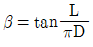
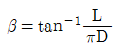

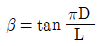
(정답률: 알수없음)
3과목: 치공구재료 및 정밀계측
41. 다음 중 만능시험기(universal tester)로서 할 수 없는 시험은?
- 인장 시험
- 비틀림 시험
- 굽힘 시험
- 전단 시험
(정답률: 알수없음)
42. 진공 중에서 재료를 가열 및 냉각시켜 재질을 경화시키는 진공경화의 장·단점을 설명한 것이다. 틀린 것은?
- 침탄 및 탈탄과 같은 표면반응이 전혀 일어나지 않는다.
- 공구강이나 다이강에서 아주 깨끗한 표면을 유지할 수 있다.
- 동일한 경화처리 조건에서는 반복 생산이 가능하다.
- 염욕로 처리시 피처리물의 오목진 부분, 틈새에 염이 남아 발생하는 부식에 대한 방지대책이 필요하다.
(정답률: 알수없음)
43. 탄소 공구강의 구상화 풀림상태로 소비자(가공자)에게 공급하는 중요한 목적 설명으로 가장 적합한 것은?
- 인장강도를 증가시키기 위해서이다.
- 고온경도를 증가시키기 위해서이다.
- 연신율의 증가와 열처리을 위해서이다.
- 가공시 가공성을 개선하기 위해서이다.
(정답률: 알수없음)
44. 치공구용 마찰부품의 마찰 재료에서 필요한 성질이 아닌 것은?
- 내열성이 낮을 것
- 마찰계수가 클 것
- 열전도성이 좋을 것
- 마찰계수가 안정되어 있을 것
(정답률: 알수없음)
45. 특수 열처리법 중의 하나로 강재를 0℃ 이하의 온도에서 냉각시키는 조작인 것은?
- 오스포밍
- 서브제로(심냉) 처리
- 오스템퍼링
- 염욕(salt bath) 열처리
(정답률: 알수없음)
46. 치공구 재료에 대한 일반적인 사항 설명 중 틀린 것은?
- 알루미늄은 마그네숨, 베릴륨 다음으로 가벼운 치공구 재료이다.
- 고분자 재료로서 플라스틱은 가볍고 내충격성이 좋은 치공구 재료이다.
- 회주철은 진동 방지를 위한 성능이 좋은 치공구 재료이다.
- 지그용 부시에는 충격을 고려하여 경도가 작은 치공구 재료를 사용해야 한다.
(정답률: 알수없음)
47. 주조한 상태로 절삭하여 사용하는 공구재료인 것은?
- 스텔라이트
- 합금공구강
- 고속도강
- 탄소공구강
(정답률: 알수없음)
48. 다음 중 특수강에 첨가되는 원소 중 고온강도와 경도를 향상시키고 내마모성을 증대시키는 대표적인 원소는?
- P
- C
- W
- Si
(정답률: 알수없음)
49. 지그 및 고정구에 2차 클램핑 또는 연질 공작물의 표면보호용 재질로 다음 중 가장 적합한 것은?
- 합금 공구강
- 세라믹
- 탄소 공구강
- 우레탄
(정답률: 알수없음)
50. 다음 중 압입 경도시험이 아닌 것은?
- 브리넬 경도
- 마르텐스 경도
- 로크웰 경도
- 비커즈 경도
(정답률: 알수없음)
51. 산화알루미늄(Al2O3)을 주성분으로 하여 소결시킨 공구강은?
- 비디아
- 당가로이
- 세라믹
- 인바아
(정답률: 알수없음)
52. 고속도강에 대한 설명으로 잘못된 것은?
- W 계열은 드릴, 탭, 브로치 등 절삭공구와 고온에서 과부하가 걸리는 베어링 부품 등에도 사용된다.
- 고속도강은 일반적으로 절삭공구 용도로 많이 쓰이나 펀치, 블랭킹 다이스 등의 용도로도 쓰인다.
- Mo 계열이 다른 계열에 비하여 저렴하며, 일반적으로 많이 쓰인다.
- Mo 계열은 W 계열에 비교하여 담금질 온도가 높고, 인성이 작으나 열전도가 좋다.
(정답률: 알수없음)
53. 탄소강의 성질로 200∼300℃에서 충격값이 가장 적어지는 것과 관계되는 용어로 가장 적합한 것은?
- 청열 취성
- 적열 취성
- 충격 취성
- 임계 취성
(정답률: 알수없음)
54. 강의 담금질 균열 방지법에 관한 설명으로 올바른 것은?
- 부분적인 온도차를 적게하기 위하여 부분단면을 일정하게 한다.
- 재료면의 스케일(黑皮)을 제거하지 말고 담금질액을 접촉시킨다.
- 설계시 부품에 될 수 있는대로 직각부분을 많게 한다.
- 길고 얇은 강편은 고온 가열 후 급격히 빠른 속도로 냉각시킨다.
(정답률: 알수없음)
55. 알루미나 세라믹 공구재료의 특성과 용도로 가장 적합한 것은?
- 경도와 충격치가 높으므로 열간 성형용 금형으로 쓰인다.
- 강도와 내열성이 크므로 다이스 재료에 쓰인다.
- 압축강도 크므로 프레스용 다이스로 쓰인다.
- 경도가 높으므로 절삭용 공구로 쓰인다.
(정답률: 알수없음)
56. 치공구용 신소재인 서멧(cermets)은 금속(또는 합금)에 다음 중에 어느 것 한가지 이상을 결합시킨 것인가?
- 실리카 시멘트
- 세라믹
- 중합금 공구강
- 머레이강
(정답률: 알수없음)
57. 공구강으로서 요구되는 성질이 아닌 것은?
- 경도가 높을 것
- 점성 강도가 높을 것
- 마모 저항이 적을 것
- 사용상의 취급이 용이할 것
(정답률: 알수없음)
58. 치공구 재료로 사용되는 알루미늄 합금의 일반적 성질 설명으로 틀린 것은?
- 전기 및 열의 양도체이다.
- 대기 중에서 내식성이 강하다.
- 현재 실용 금속 중 가장 가벼운 금속이다.
- 주조가 용이하고 타 금속원소와 잘 합금이 된다.
(정답률: 알수없음)
59. 표면경화 열처리의 종류에 해당되지 않는 것은?
- 침탄법(carburizing)
- 질화법(nitriding)
- 방전경화법(spark hardening)
- 패턴팅법(patenting)
(정답률: 알수없음)
60. 황동은 구리(Cu)에 다음 중 무엇을 첨가시킨 합금인가?
- Ni
- Zn
- Sn
- Fe
(정답률: 알수없음)
4과목: 기계공정설계
61. 구멍을 검사하기 위한 플러그 게이지 중 테일러의 원리에 맞는 것은?
- 통과측은 구멍 길이의 1/2 길이를 가진 플러그게이지
- 통과측은 구멍과 같은 길이를 가진 플러그게이지
- 정지측은 구멍과 같은 길이를 가진 플러그게이지
- 정지측은 구멍 길이의 1/2 길이를 가진 플러그게이지
(정답률: 알수없음)
62. 대부분 제조 특히, 금속가공분야에서 일반적인 공정을 분류할 때 가장 거리가 먼 것은?
- 지원공정(supporting operation)
- 중요공정(major operation)
- 특수공정(special operation)
- 기본공정(basic process operation)
(정답률: 알수없음)
63. 다음 부품의 실효치수는?
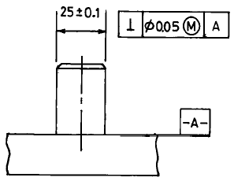
- 25.15
- 24.95
- 24.85
- 25.⑤
(정답률: 알수없음)
64. 게이지 블록의 평면도 측정에 이용하는 측정기로 가장 적합한 것은?
- 사인 바
- 비접촉식 3차원 측정기
- 평행 정반
- 광선 정반
(정답률: 알수없음)
65. 다음 제조 공정중에서 재료의 물리적 성질을 변화시키는 공정은?
- 접착접합
- 열처리
- 리베팅
- 배럴 다듬질
(정답률: 알수없음)
66. 연마(Polishing)작업은 다음 중 어떤 공정에 속하는가?
- 성형공정(Forming)
- 주조공정(Casting)
- 절삭공정(Cutting)
- 다듬질공정(Finishing)
(정답률: 알수없음)
67. 그림과 같은 순서로 제품을 기계가공 하였다. A면과 B면 사이의 치수는 얼마가 되는가?
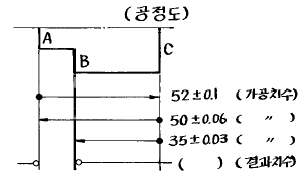
- 15 ± 0.03
- 15 ± 0.09
- 15 ± 0.10
- 15 ± 0.19
(정답률: 알수없음)
68. 제품제조 기사가 공정설계 기사로 부터 받아야 할 도면 또는 서류가 아닌 것은?
- 공정 총괄표
- 공정 작업도
- 게이지 설계도
- 검사 지침서
(정답률: 알수없음)
69. 다음 장비 선정 요소 중 투자비 항목에 속하지 않는 것은?
- 설치비
- 수송비
- 건물비
- 공구비
(정답률: 알수없음)
70. 두께가 얇은 공작물을 밀링(Milling)가공할 때 하향절삭 (down milling)을 하려면 다음의 공작물 관리법 중 어느 것을 특히 가장 고려하여야 하는가?
- 기하학적 관리
- 기계적 관리
- 칫수관리
- 표면관리
(정답률: 알수없음)
71. 공정설계 기사가 공작물 관리를 유지하는데 필요한 사항이 아닌 것은?
- 평형 이론
- 위치결정 개념
- 대체위치결정 이론
- 제작수량 관리
(정답률: 알수없음)
72. 피치 게이지는 나사의 어느 항목을 측정하는가?
- 유효지름
- 산의 반각
- 골지름
- 나사 피치
(정답률: 알수없음)
73. 게이지 블록으로 정밀 측정시 고려하여야 할 사항 중 가장 중요한 것은?
- 온도
- 습도
- 정압
- 측정압
(정답률: 알수없음)
74. 제 1종 수준기의 기포가 4 눈금 이동되었다면 기준 길이가 500 mm일 때 그 이동거리는 얼마인가?
- 0.02 mm
- 0.03 mm
- 0.04 mm
- 0.⑤ mm
(정답률: 알수없음)
75. 다음 중 부품 공작도에 표기할 사항이 아닌 공정 작업도에만 나타내는 것은?
- 정밀도
- 제품의 크기치수
- 재질
- 위치 결정면
(정답률: 알수없음)
76. 게이지 블록 500 mm와 조오를 홀더에 넣고 20 ㎏으로 고정할 때 변형량은 몇 ㎛ 인가? (단 게이지 블록의 단면 : 35× 9 mm, 세로탄성계수 : 2.1× 104 ㎏/mm2 이다)
- 1.5
- 2
- 2.5
- 3
(정답률: 알수없음)
77. 이미 칫수를 알고있는 기준편과의 차를 구하여 칫수를 아는 측정방법은?
- 직접측정
- 비교측정
- 절대측정
- 간접측정
(정답률: 알수없음)
78. 삼차원 측정기의 조작방법에 따른 형식이 아닌 것은?
- 매뉴얼식
- 모터 드라이브식
- CNC식
- 좌표치 검출식
(정답률: 알수없음)
79. 그림과 같이 지름이 d 인 두개의 강구를 사용한 원통의 안지름(D)측정과 관련된 다음 관계식들 중 틀린 것은?
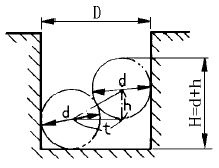
- D = d + t
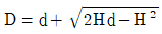
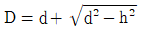
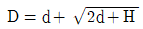
(정답률: 알수없음)
80. 피측정면 표면에서 반사광과 표준반사면으로부터 반사광의 위상차에 의하여 간섭무늬를 확대하여 관측하는 표면 거칠기 측정법은?
- 현미간섭식
- 측광식
- 광절단식
- NF식
(정답률: 알수없음)